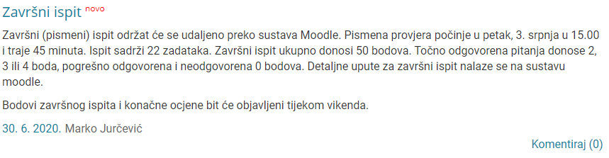

Lyras Bump. Je li netko pitao kojim slučajem?
pisalo je prije da ce 8.7 biti kao i prosli put ona pitanja za bodove, ali sad nmg naci tu obavijest, a ni na moodlu tu aktivnost. Jel zna iko sta je s tin
zna li netko oce zavrsni biti na faksu ili online, ako je netko mail slao?
rozy Detective Schmosby Završni će biti online, poslao sam mail. Dubravko:
Pozdrav! Bit će online. SP, D.
Bit ce na faksu kako za sada stvari stoje, rekli su da ce se svi ispiti odrzavati na faksu dokle god se ne preporuci drugacije ili dok se ne ukine javni prijevoz.
nekak predosjecam negativne bodove
sheriffHorsey ipak nema negativnih, al zato nema ni vraćanja na pitanja…
nadam se da ce nam polsati sutra onda sluzbeni mail da budemo sigurni. Jer nadam se tome da mogu ranije kuci otic Bogu hvala.
sheriffHorsey Da su barem dali polovične bodove(ako će biti pitanja s više odgovora) i još su maknuli samoprovjere da ih ne možemo pregledat.
Evo ofišl 
koja gradiva ulaze u zavrsni ispit ?
𝐓𝐇𝐄 𝐒𝐄𝐂𝐑𝐄𝐓 - 𝐂𝐋𝐔𝐁 sve
Nisam previše pratio predavanja u zadnje vrijeme - jesu li spomenuli možda nešto o drugoj samoprovjeri ili o ovim anketama?
Došla je obavijest za bodove iz aktivnosti. Zar su oni odlučili davati nekakve bodove iz sudjelovanja umjesto da se održe ankete bez da nam daju obavijest ili su to neki dodatni bodovi?
Da ni ja ne kužim, ne piše mi nigdje da sam ikakve bodove dobio, a čekam te vražje ankete od rođenja. Btw jel u završni ulazi cijelo gradivo ili samo drugi ciklus?
Dosli su rezultati, al jel budu oni upisali bodove iz samoprovjera
Fikalo Upravo dosli